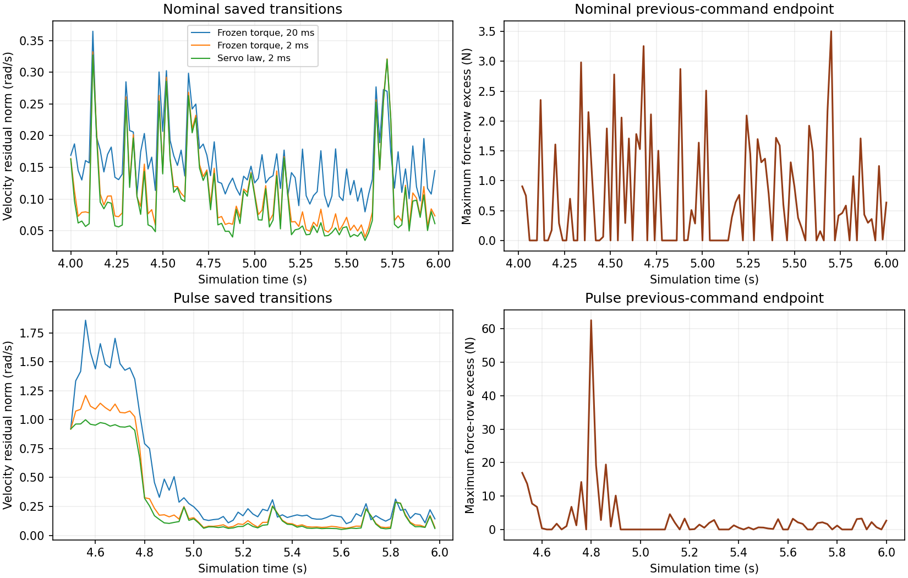

18 October 2026 · Model-uncertainty-transfer prerequisite · Repository baseline ba37518
Servo evolution fails the proposed explanation of the remaining prediction error: its improvement over fine-step frozen-torque prediction is 4.87% on nominal data and 12.18% under the reserved pulse, against a 10% requirement in both conditions. Finer integration alone reduces velocity residual by 22.46% and 28.59%. Commands that satisfy contact constraints when issued violate model cone rows at 75/100 nominal and 57/75 pulse endpoints. This checkpoint completes the requested prerequisite branch with 175 saved transitions and zero new rollouts. Physical-parameter adaptation was not performed because the residual includes known command/integration errors and infeasible contact dynamics.
A transition spans one 20 ms control interval. Selection uses 100 archived nominal transitions starting at 4.00–5.98 s; reserved evaluation uses 75 pulse transitions starting at 4.50–5.98 s. The pulse is the earlier 90 N world +y disturbance at the reaching wrist from 4.50–4.80 s. Both datasets use the earlier executable-torque filter. A residual is the state difference between a prediction and the next estimated observation. Velocity residual is the root-mean-square Euclidean norm of base angular velocity and 27 joint-velocity errors, in rad/s. Translation residual is the corresponding base-position norm, in mm. Sole residual is the position-error norm at each model sole, in mm.
Normal force is signed world-z compression, in N. Cone excess is positive distance outside a contact bound; force rows use N and moment rows N m. Endpoint feasibility evaluates the previous command at the next estimated state before replacing the command. It scores the contact model, not physical tensile force. Runtime p95 is the 95th percentile on one CPU. Parameter-update cost is zero because no parameter is fitted or updated. Physical slip, tracking and task metrics below are inherited from the source rollouts.
The preceding foot-model result retained a 0.688 rad/s disturbed velocity residual after constraining initial executable torque. Its action model applies that initial torque over 20 ms; the actuator executes a position, velocity and feedforward command whose torque changes with joint motion. The brace-selection checkpoint also found incorrect loaded-body assumptions. Fitting friction or lag to these residuals would combine physical uncertainty with these known model errors.
The opt-in audit compares one 20 ms frozen-torque step, ten 2 ms frozen-torque steps, and ten 2 ms steps that re-evaluate the issued servo law at predicted states. All use the same contact dynamics, costs, initial estimated state and issued command. The 35-node horizon and 0.02 s MPC step remain unchanged; substeps occur only in this separate predictor audit. No plant step or optimizer runs. Nominal command gains and actuator bounds are the existing interface specification; no hidden varied plant parameter enters prediction.
The hypothesis and 10% criterion were saved before measurement. Nominal data selected no servo correction because the criterion failed. All three predictors were then evaluated unchanged on pulse transitions after 4.50 s, excluding the identical pre-pulse history. Controller observations are the archived default_sense(seed=17) estimated-state path. Future observations are scoring targets only. Its 10 mm/0.01 rad base-bias assumptions and ideal joint/velocity channels have no hardware calibration.
| Condition / predictor | Velocity residual (rad/s) | Translation residual (mm) | Left / right sole residual (mm) | Evaluation p95 (ms) |
|---|---|---|---|---|
| Nominal / frozen 20 ms | 0.165848 | 0.110416 | 0.02823 / 0.09788 | 0.068 |
| Nominal / frozen 2 ms | 0.128601 | 0.053721 | 0.02689 / 0.09252 | 0.631 |
| Nominal / servo 2 ms | 0.122342 | 0.051761 | 0.02689 / 0.09252 | 0.668 |
| Pulse / frozen 20 ms | 0.692091 | 0.188451 | 0.05565 / 0.10146 | 0.069 |
| Pulse / frozen 2 ms | 0.494229 | 0.070546 | 0.04310 / 0.09047 | 0.627 |
| Pulse / servo 2 ms | 0.434011 | 0.072222 | 0.04310 / 0.09047 | 0.679 |
The servo predictor reduces velocity residual by 26.23% nominal and 37.29% pulse relative to the original predictor. Most of the nominal improvement comes from integration. These values exclude transitions starting at 6.00 s, so they differ slightly from the earlier whole-tail metrics. Evaluation latency includes force-row extraction; it is a single-transition measurement and does not measure a re-solved MPC horizon.

| Condition | Initial feasible transitions | Violating endpoints | Endpoint force / moment excess (N / N m) | Servo predictor force / moment excess (N / N m) |
|---|---|---|---|---|
| Nominal | 100 / 100 | 75 / 100 | 3.505 / 1.050 | 3.480 / 1.034 |
| Pulse | 75 / 75 | 57 / 75 | 62.546 / 4.550 | 29.152 / 1.640 |
The servo predictor requests forearm normal force down to −0.188 N nominal and −0.617 N under the pulse. At observed endpoints, the minima are −0.150 N and +0.513 N. Initial feasibility therefore provides no interval guarantee. Finer frozen-torque integration also develops violations, so this failure is not explained solely by servo evolution.
Independent scoring reconstructs the issued actuator law at 1,750 physical 2 ms samples with maximum error 5.8 × 10⁻¹⁴ N m. Physical torque changes within a command reach 2.110 N m nominal and 7.497 N m pulse. Ground-truth traces enter this validation only. The simulated actuator law provides no evidence of an additional unmodelled lag; hardware response remains unmeasured.
These measurements describe the same previously recorded filtered controller for every predictor. The audit changes no command and measures no new closed-loop benefit. Motion and slip cover 4.50–6.02 s; final reach compares the reaching point with the target. Sole displacement is maximum distance from the interval’s initial sole position. Loaded slip is floor-contact material-point horizontal speed above 5 N normal load. Tracking is joint-position command error averaged over joints and time.
| Source condition | Final reach error (mm) | Left displacement / slip (mm / m/s) | Joint speed / acceleration (rad/s / rad/s²) | Tracking (mrad) | Solve + filter p95 (ms) |
|---|---|---|---|---|---|
| Nominal | 19.222 | 0.190 / 0.0030 | 0.339 / 165.5 | 0.800 | 24.22 |
| Pulse | 21.058 | 0.304 / 0.0091 | 1.850 / 203.7 | 7.430 | 23.96 |
Both sources have zero loaded foot-contact loss in this interval and zero native simulated friction-cone excess. Their original MPC trajectories still violate soft force constraints. The source solve-plus-filter p95 already exceeds the 20 ms period. The present predictor evaluation and zero parameter-update cost are reported separately; their integration into a real-time controller is untested.
Existing source videos: nominal left, pulse right. Each has 181 frames at 30 fps with 1× playback and simulation timestamps. Video/source hashes and frame counts pass; both frame sequences were inspected. No new behavior was generated.
All 27 saved-data review checks pass. The original prediction is reproduced within 2.2 × 10⁻¹⁵ in state coordinates. Seven serial guarded jobs consumed 14.08 s of the 1200 s numerical allowance, including three failed setup/review attempts. Peak RSS was 2,691,760 KiB under 4.4G; plotting used 1.6G. CPU quota was 200 with one thread on core 18. Resguard remained at 213 events, with no new refusal or kill. Cumulative checkpoint rollout count is 0/6; rollout retries are zero.
The first assertion confused feedforward and total actuator bounds. Review then encountered an unavailable plotting module and a CSV time-column name mismatch. All were corrected without a rollout, dependency install or change to shared controller code; failed sources and logs are archived. All 38 archive members pass hash verification. The ten-minute quota read was 36% five-hour / 36% weekly. The checkpoint was saved before 30 minutes. The session budget remains 18, with 12 used. No runner, queue, timer, default or site membership changed.
The known command law and finer integration improve prediction, but their negative cross-condition selection result does not identify a dominant physical parameter. Contact infeasibility persists inside the command interval. This completes the prerequisite measurement; physical-parameter adaptation, adapted-controller task performance and recovery remain unperformed. The earlier CAD/body mismatch also prevents treating these source rollouts as validated hardware contact geometry.
Hardware identification needs synchronized issued position/velocity/feedforward commands, measured current or torque, joint encoders and estimated base state, with independent sole motion and loaded-body contact measurements. At least one sample inside each 20 ms command is necessary to separate command evolution from lag; the present scoring used 2 ms samples. Hardware friction, compliance and delay ranges remain unmeasured, so no uncertainty range is selected here.
The next force-control experiment should constrain a predicted command interval using the known servo law, then score every physical substep and the next observed endpoint under one reserved disturbance. It fails if interval cone violations or contact loss persist, or if solve-plus-update latency exceeds 20 ms. Measured current/torque and loaded-body geometry are required before fitting hardware lag or friction from the remaining residual.
Metrics and decision · Predeclared hypothesis · Frozen selection decision · Independent review · Commands and resources · Raw archive · Predictor audit · Review source · Source-rollout result